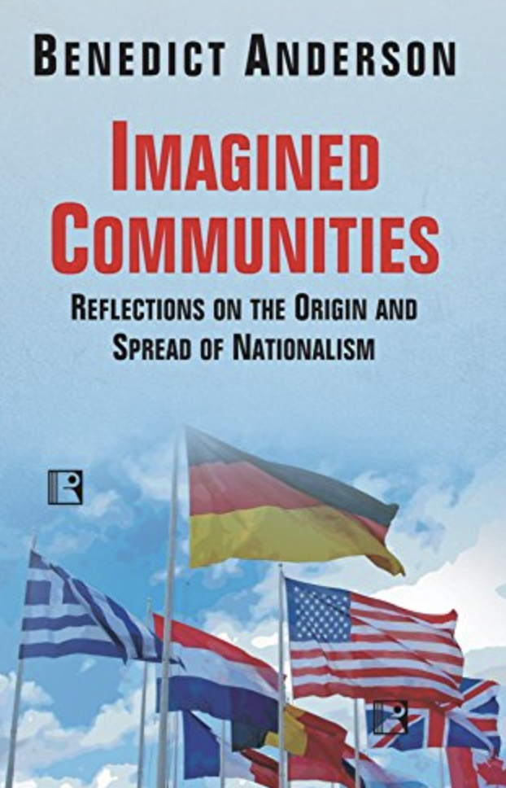

Benedict Anderson. Imagined Communities
Modern nation
- In Imagined Communities, Benedict Anderson defines nation as the following: "regardless of the actual inequality and exploitation that may prevail in each, the nation is always conceived as a deep, horizontal comradeship. Ultimately it is this fraternity that makes it possible, over the past two centuries, for so many millions of people, not so much to kill, as willingly to die for such limited imaginings."

Fig.1. The cover of Anderson's book.
-
The imagined community is limited because regardless of size it is never taken to be co-extensive with humanity itself. In contrast to ideologies such as Marxism, for example.
-
Anderson claims that nations emerged with print capitalism, universal literacy and secondary education.